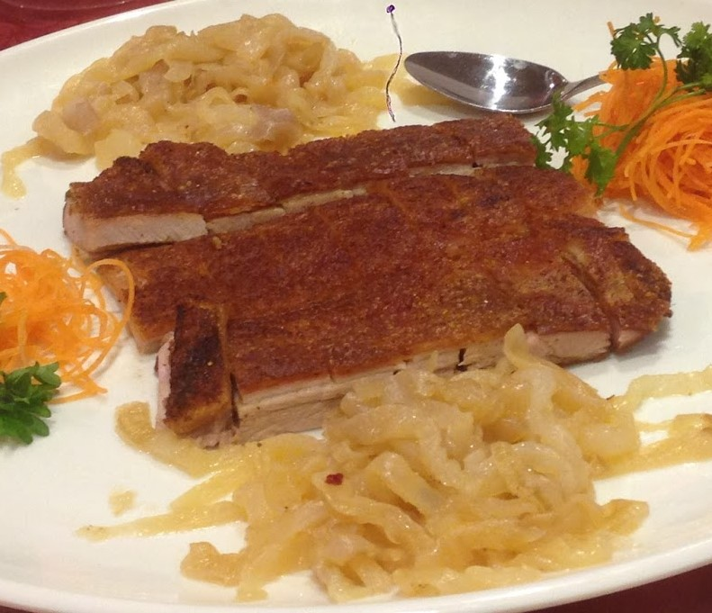
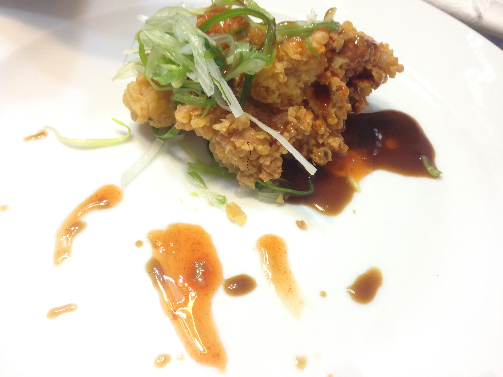
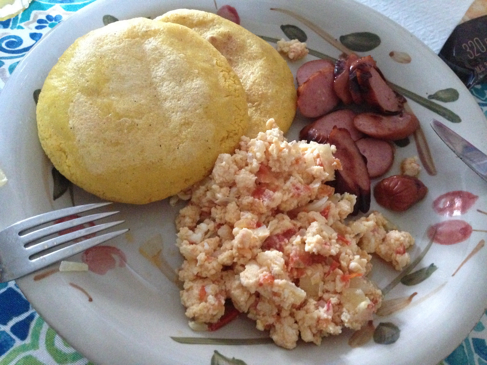
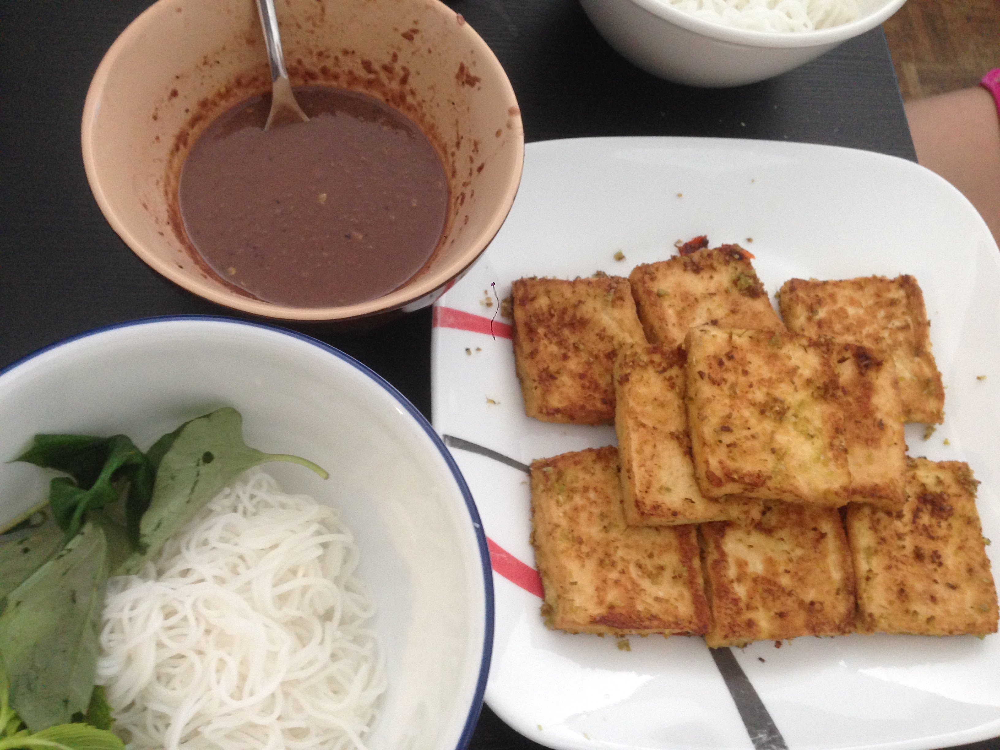
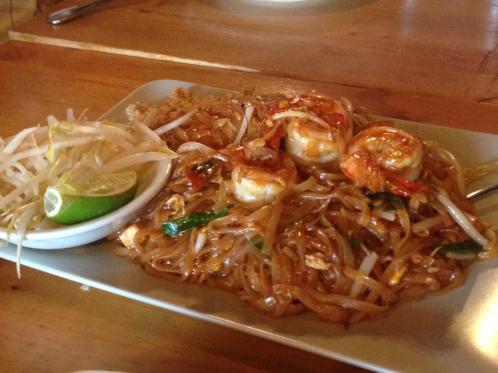
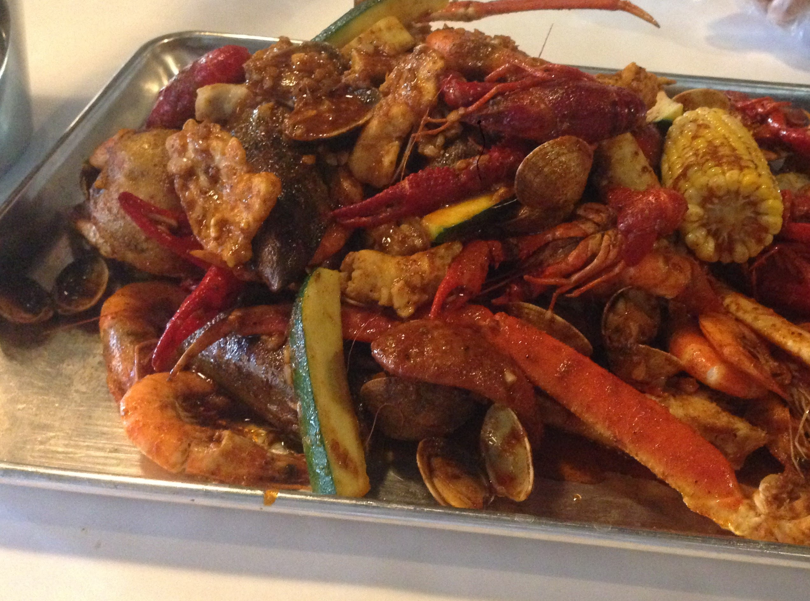
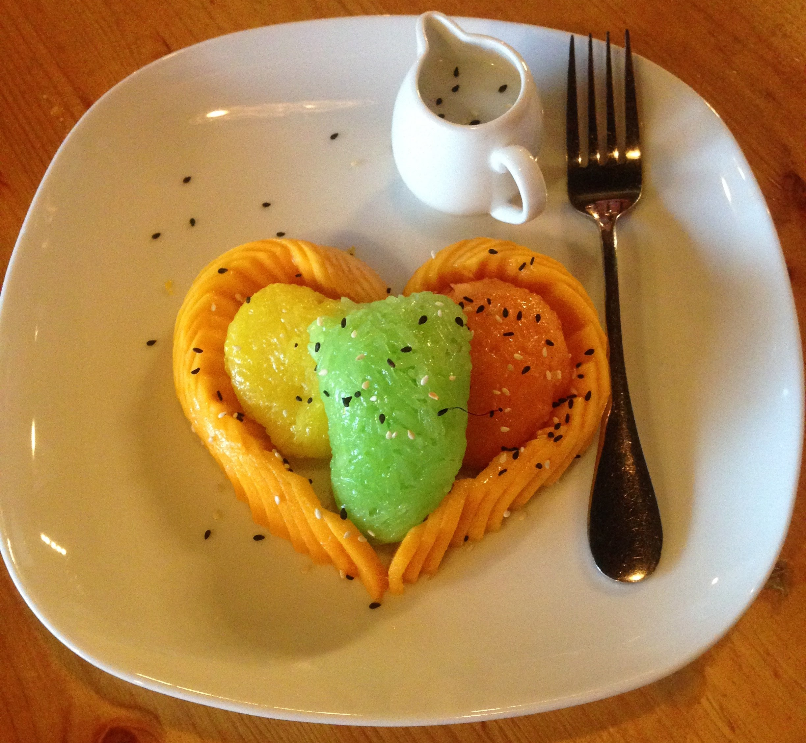
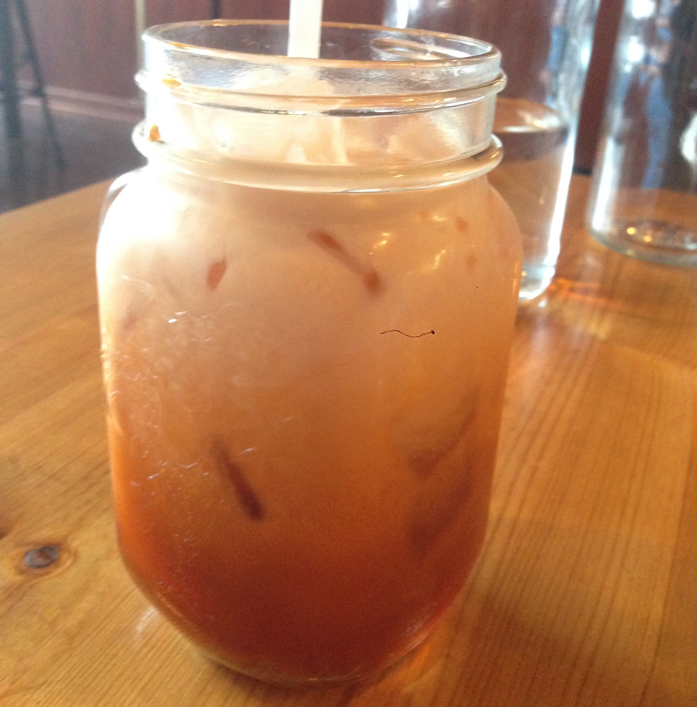
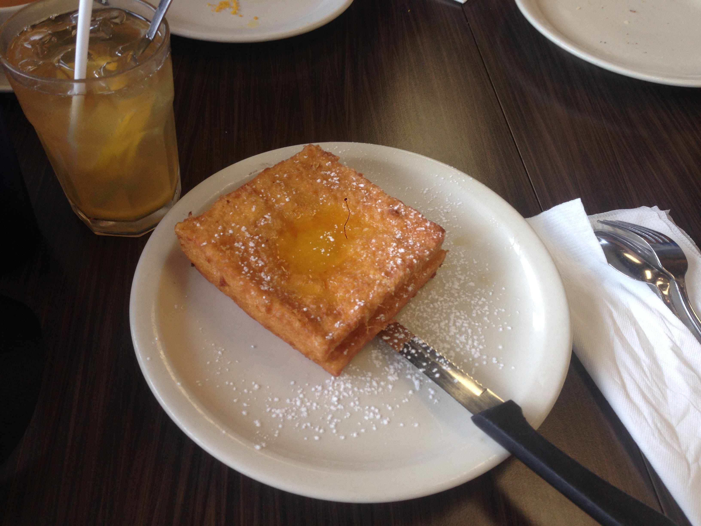
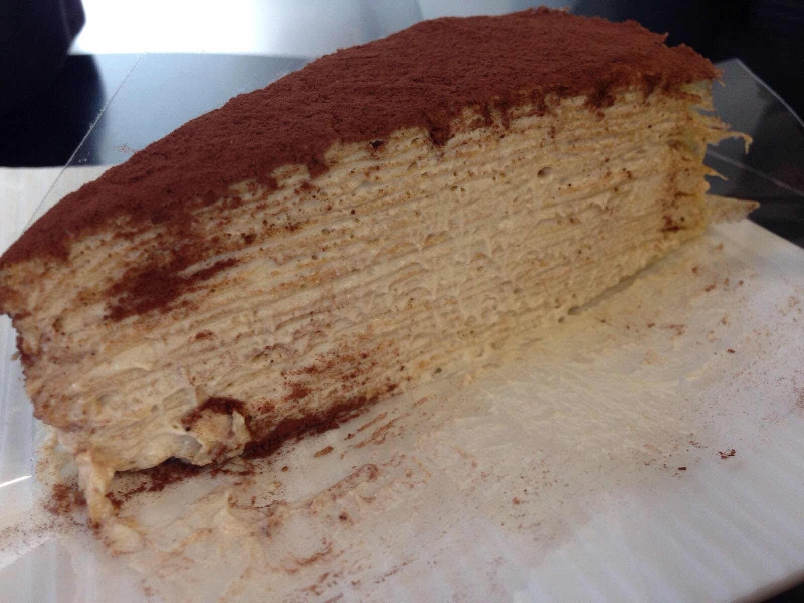

| Photo | Information |
|---|---|
|  | BBQ-Pork An traditional chinese style BBQ-Pork with a crispy skin. Basic ingredient: Pork Belly, Seasoning powder Rate: *** |
|  | Fried Chicken-Korean style An traditional korean style fried chicken with green oinion sidedish. Basic ingredient: Chicken, Green Onion, Seasoning Rate: **** |
|  | Arepa An traditional Venezuela style Arepa breakfast made from corn meal. Basic ingredient: Corn meal, sausage/hotdog, eggs, tomato, salt Rate: ***** |
|  | Crispy Tofu An traditional Vietnamese style fried tofu serve with the shirmp pate sauce. Basic ingredient: Tofu, shirm pate, vermici Rate: ***** |
|  | Pad Thai An traditional Thai stir-fried rice noodle serve with chicken/beef/pork/shirmp. Basic ingredient: Rice noodle, Shirmp, Pad Thai paste, Veggie Rate: ***** |
|  | Seafood Boil An traditional Lousiana style seafood boil with butter and seasoning. Basic ingredient: Combination of Seafoof, Lousiana seasoning, veggie Rate: *** |
|  | Mango sticky-rice An traditional Thai dessert. A slide of mango on the top of the coconut milk cooked sticky rice. Basic ingredient: Mango, Sticky-rice, Coconut milk Rate: ***** |
|  | Thai tea An traditional Thai sweet creamy tea with orange color. Basic ingredient: Thai tea (orange), Milk Rate: ***** |
|  | Fried French Toast An french toast is fried with an egg layer and stuffed with peanut butter. Basic ingredient: Sandwich, Peanut butter spread, egg Rate: **** |
|  | Tiramisu An traditional italian cake with japanes style with layes of crepe. Basic ingredient:Egg, All purpose powder, Mascarpone cheese, Chocolate powder Rate: ***** |
Get a Table?!
647-300-0131